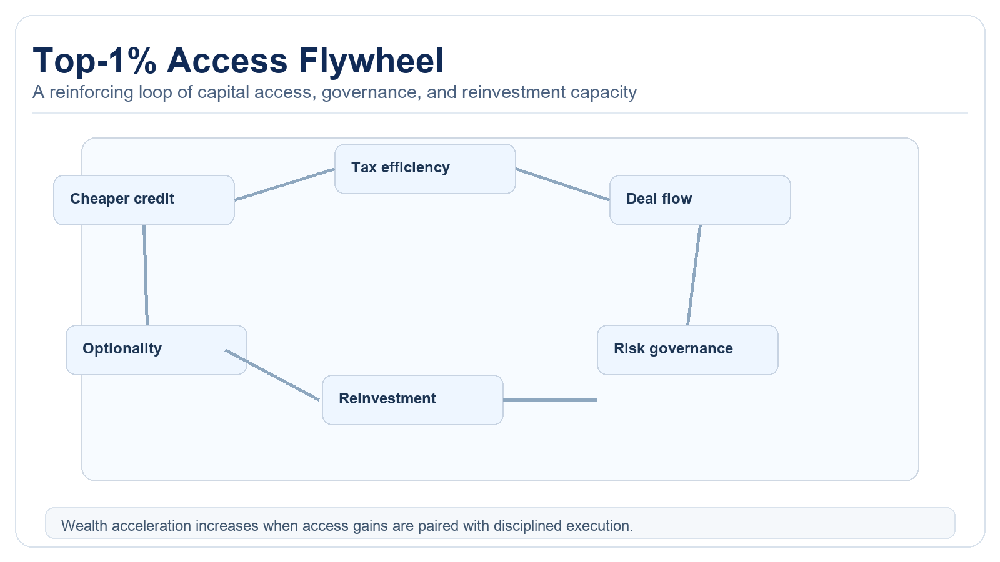

The Compounding Gap: Why the Top 1% Pulls Away Faster After $1M
Wealth accumulation isn't linear. Between $1M and $5M, access changes how compounding works, allowing growth to accelerate structurally.
Most wealth advice assumes symmetry in percentage returns: everyone can compound similarly if they save consistently and invest broadly. This holds true at lower scales. At higher scales, access to cheaper credit, tax structures, private opportunities, and professional oversight can speed up compounding and reduce friction. This is the compounding gap. The divergence comes not from market participation itself, but from structural advantages that become worthwhile only above certain capital thresholds. These advantages create a multiplicative effect on net returns that standard models often overlook.

Why Non-Linearity Appears
Capital cost declines with scale
Higher-net-worth households often access lower financing costs, better collateral terms, and more flexible liquidity tools. Lower friction means less forced selling and more durable exposure to compounding assets. Institutional lending channels offer margin loans and securities-based lending at rates 200-300 basis points below consumer rates. This cost differential enables strategic leverage for opportunistic acquisitions without disrupting core portfolio compounding. The ability to pledge concentrated positions without triggering taxable events further preserves capital efficiency.
Opportunity set expands
Large portfolios can access structures and markets not available to smaller investors. Not all are superior, but the option set is wider. Private equity, venture capital, and direct real estate syndications typically require minimum investments of $250,000 to $1 million. These vehicles offer illiquidity premiums and diversification unavailable in public markets. Evaluating these opportunities requires professional management, creating another scale-dependent advantage.
Tax and legal optimization improves
Advanced planning reduces leakage and preserves more of the gross return. The effect compounds over decades. Strategies like charitable remainder trusts, opportunity zone funds, and captive insurance structures require significant legal overhead, becoming cost-effective only above specific asset thresholds. Cumulative tax savings from systematic tax-loss harvesting, asset location optimization, and estate planning can add 50-100 basis points annually to after-tax returns when executed consistently.
Behavioral governance tends to formalize
Households at higher wealth tiers are more likely to formalize policy, risk controls, and decision rhythm. Better process quality reduces avoidable interruptions to compounding. Moving from ad hoc decisions to documented investment policy statements creates systematic discipline. This institutional approach minimizes behavioral errors like panic selling, performance chasing, and emotional attachment to underperforming assets. Formal governance establishes clear rebalancing triggers, concentration limits, and liquidity requirements that protect against capital erosion during market stress.
The Flywheel Effect

Cheaper credit supports better deployment timing. Better deployment improves outcomes. Better outcomes increase bargaining power and access. If governance remains disciplined, the loop reinforces itself over long horizons. Each cycle of successful capital deployment strengthens the household's position for subsequent opportunities. The flywheel gains momentum through demonstrated track records that attract co-investment opportunities and preferential terms from counterparties. This self-reinforcing cycle explains why wealth concentration tends to accelerate rather than plateau at higher levels.
Critical caveat: access without discipline can destroy capital faster at higher scale. The flywheel is conditional on risk process quality. Leverage magnifies errors, and complex investments carry hidden risks that require sophisticated due diligence. Many households fail to transition from entrepreneurial wealth creation to institutional wealth preservation, resulting in spectacular reversals that demonstrate the double-edged nature of scale advantages.
What This Means For Sub-$1M Households
The right response isn't fatalism. It's building the same process traits earlier: savings automation, concentration caps, liquidity governance, and tax-aware execution. These controls increase survival through drawdowns, a prerequisite for compounding into higher-access tiers. Households should focus on developing institutional habits before reaching institutional scale. This includes creating written investment policy statements, establishing clear asset allocation targets, and implementing systematic rebalancing protocols. The discipline required to manage $10 million effectively must be cultivated while managing $100,000.
What This Means For Policymakers
If wealth concentration is treated only as a returns issue, policy misses the structural access layer. Ownership broadening tools, retirement participation architecture, and low-friction savings channels can reduce entry barriers without suppressing productive investment. Policy interventions should focus on democratizing access to scale advantages through vehicles like pooled employer plans, auto-portability solutions for retirement accounts, and simplified tax compliance for small-balance investors. The goal should be structural inclusion rather than punitive redistribution, preserving incentive structures while broadening participation in compound growth.
Household Playbook
1) Protect compounding continuity
Avoid forced sales by maintaining liquidity reserves and debt-service stress tolerance. Establish emergency reserves covering 12-24 months of living expenses outside investment portfolios. Implement laddered bond portfolios or dedicated cash flow strategies to ensure operational expenses never drive selling decisions. Stress test leverage arrangements against historical drawdown scenarios to ensure survival through extended downturns.
2) Build policy discipline before scale arrives
Concentration limits, rebalance rules, and tax-aware execution should start early. Document investment policies specifying maximum position sizes, rebalancing triggers, and tax minimization protocols. Implement these rules through automated systems or third-party administrators to remove emotional discretion. The mechanical application of discipline creates muscle memory for managing larger sums effectively.
3) Upgrade access in stages
As portfolio size increases, add tools gradually and retain governance simplicity. Transition from retail mutual funds to institutional share classes at $100,000 balances. Explore separately managed accounts at $250,000 thresholds. Consider private market exposure only after establishing robust public market foundations above $1 million. Each upgrade should solve specific limitations rather than merely signaling sophistication.
4) Measure process, not only returns
Track savings consistency, implementation quality, and drawdown behavior. These are leading indicators of whether the household can benefit from non-linear compounding when scale emerges. Monitor metrics like savings rate percentage, tax efficiency ratio, and policy compliance frequency. These process measurements provide earlier warning signals than trailing returns and allow corrective action before capital erosion occurs.
Source List
Federal Reserve. (2026). Distributional Financial Accounts.
World Inequality Database. (2025). Top wealth share and distribution data.
OECD. (2025). Wealth inequality and household asset distribution indicators.
Federal Reserve Bank of St. Louis. (2026). Credit and asset-market series context.